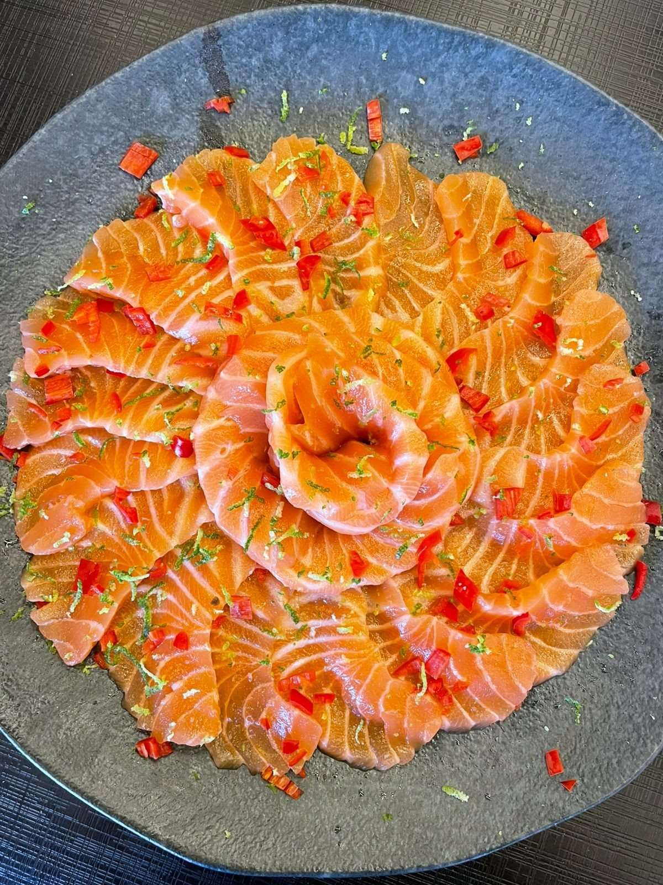
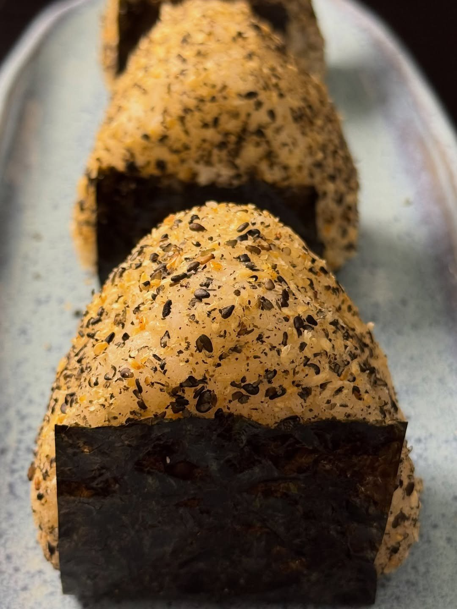
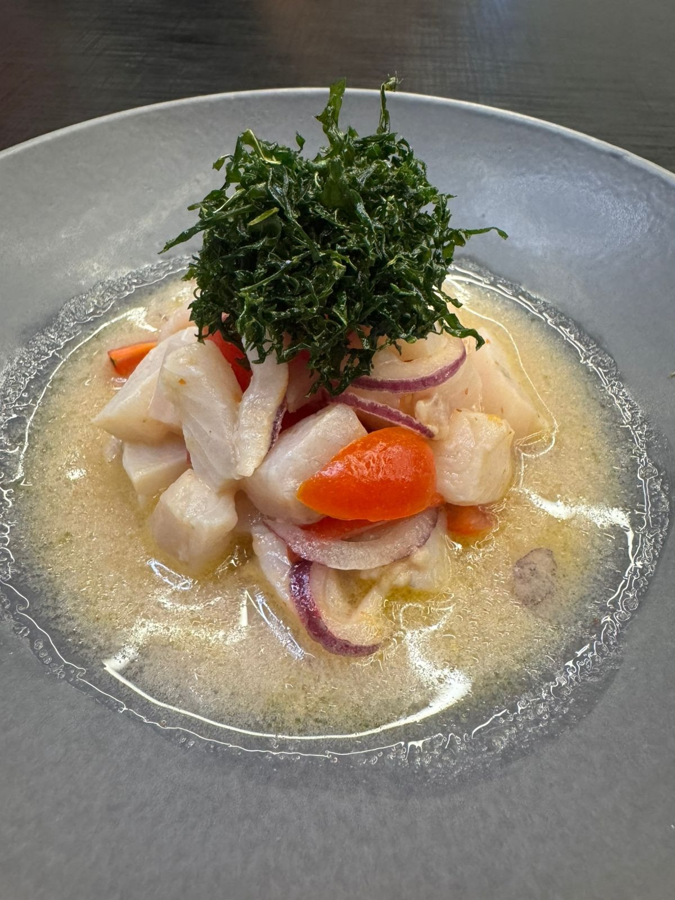
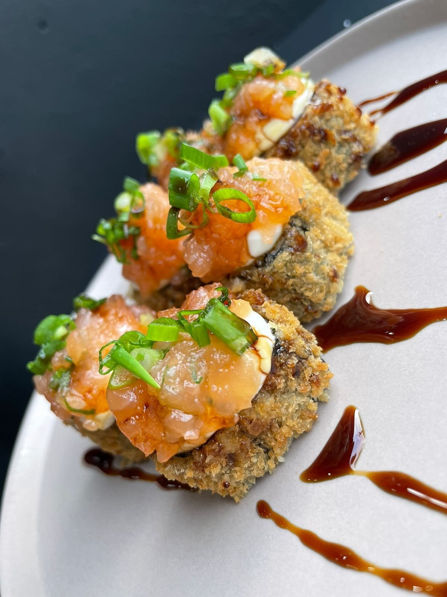
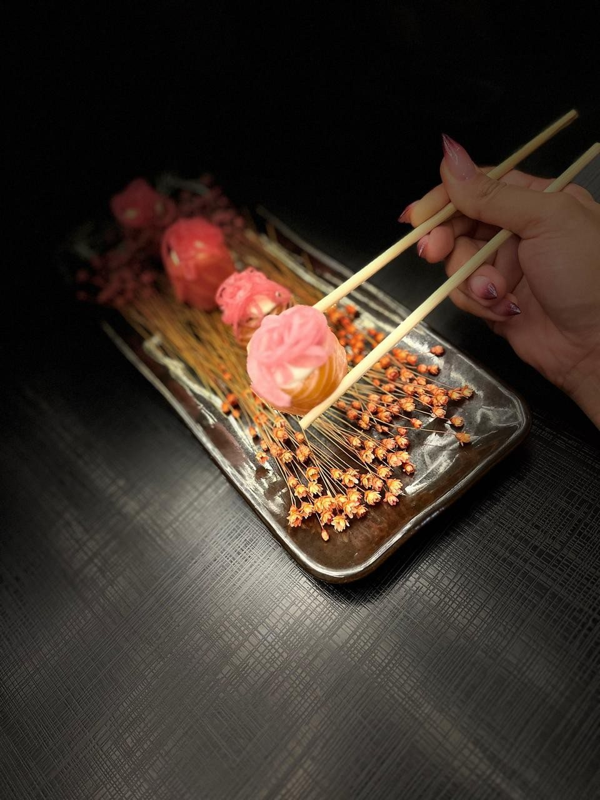

Entradas
Carpaccio de salmão
“20 finas lâminas de salmão, pimenta dedo de moça, raspas de limão.” Acompanha ponzu. R$ 62,00.
Mata Escura · Salvador Delivery ou retirada no balcão
“Sushi fresco e feito na hora.” São 114 sabores para montar o seu combo, de 5 em 5 peças, além de onigiri, temaki hot de 1 kg e yakisoba. O pedido chega direto no WhatsApp da casa.

Por onde começar
Escolha até 10 sabores, 5 peças de cada. Dá para gastar pouco ou fazer uma festa.
Escolher as peçasNovidadeO lançamento de agosto, em unidade, dupla e trio. Também na versão hot, empanado no panko.
Ver os onigirisPra dividirTemaki hot de 1 kg, yakisoba de 1 kg e o combo misterioso para a mesa toda.
Ver os grandesTudo142 itens em 18 grupos, com busca. Toque em “+” e o pedido vai montando.
Abrir o cardápioMonte seu combo
“Você não precisa escolher um combo pronto. Aqui, quem monta o combo é você!”Amor In Sushi, no Instagram
Os 114 sabores, por faixa de preço da peça:


Novidade da casa
“O lançamento virou HIT! Nosso Onigiri chegou no cardápio e vocês simplesmente não estão dando conta de deixar ele quieto!”Amor In Sushi, 27/08/2026
Shari com maionese Kewpie, gergelim torrado, óleo de gergelim, cebolinha e a proteína que você escolher: atum, camarão, kani, salmão grelhado ou tartar de salmão, todos também na versão dragon (apimentada).
Da bancada

“20 finas lâminas de salmão, pimenta dedo de moça, raspas de limão.” Acompanha ponzu. R$ 62,00.

Salmão em cubos, kani, pimenta biquinho, cebola roxa, azeite de ervas, sriracha e limão. R$ 48,00.

Um dos 114 sabores do monte seu combo: 5 peças por R$ 27,50, ou R$ 30,00 maçaricado.
Pra dividir
Kani, salmão grelhado, salmão fresco, ou salmão com camarão. De R$ 95,00 a R$ 135,00, com 3 molhos.
Ver os temakis de 1 kg 1 kgDo vegetariano (R$ 30,00) ao Yaki da casa, com carne, frango, camarão, lula e lascas de salmão (R$ 88,00).
Ver os yakisobas 20 ou 22Peças que a casa escolhe: 20 por R$ 35,00 ou 22 por R$ 60,00, com limite por pessoa.
Como funciona
Sushi do seu jeito
Você escolhe a base, a proteína, os adicionais e o molho. A casa monta.
37 avaliações no Google
Consulta em 04/10/2026Quem já pediu
“Tudo bem preparado com dedicação, sentimos isso no paladar. Tudo fresquinho, higienizado, organizado e gostoso!”Sheila S. · Google · 5 estrelas
“Pedido de 40 + 10 peças de Sushi, estavam saborosas e bem feitas.”Helder A. · Google
Galeria
Como pedir
Hoje o cliente monta no CardápioWeb e ainda precisa confirmar no WhatsApp. Aqui é um passo só: toque em “+” nos itens, confira a sacola e mande a mensagem pronta para a casa.
Horário do CardápioWeb
Horário publicado no CardápioWeb em 04/10/2026. A casa abre algumas terças e fecha em datas avulsas: confirme pelo WhatsApp.
Dúvidas frequentes
Não. A casa trabalha só com delivery e retirada no balcão, na R. da União, 33 E, Mata Escura.
Segunda, quarta e quinta, das 17h30 às 22h; sexta, sábado e domingo, das 17h30 às 23h. Terça fechado, com exceções avisadas pela casa.
O cardápio lista 157 bairros de Salvador, como Cabula, Pernambués, Brotas, Pituba, Itapuã e Cajazeiras. A taxa depende do bairro: confirme pelo WhatsApp.
O prazo publicado é de 90 minutos a 3 horas, conforme a demanda.
Dinheiro, cartão de débito, cartão de crédito ou Pix. Em pedidos de valor mais alto, a casa pede 50% antecipado via Pix; não trabalha com link de pagamento nem parcelamento.
Avise o atendimento antes de pedir. A casa lembra que alguns pratos podem conter espinhas e não recomenda o combo misterioso para quem tem alergia.
Peça agora
Delivery para mais de 150 bairros de Salvador ou retirada no balcão da Rua da União, na Mata Escura. O pedido chega pronto no WhatsApp da casa.